04 · 1
AIGC 图片作品
以下作品均由 Seedream 5.0 Pro 生成。「千禧年风格系列」试图复刻 2000 年前后中国小镇的胶片质感——街头、铁路与童年，三个记忆切片。点击图片可查看大图。
SERIES 01
千禧年风格 · 街头
放学的人潮、集市与邮亭，夏天的河街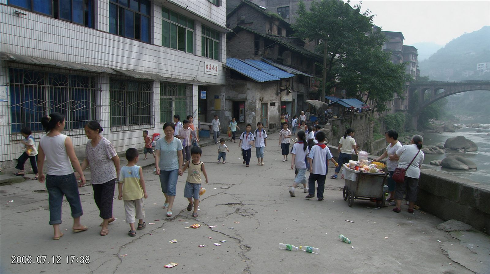
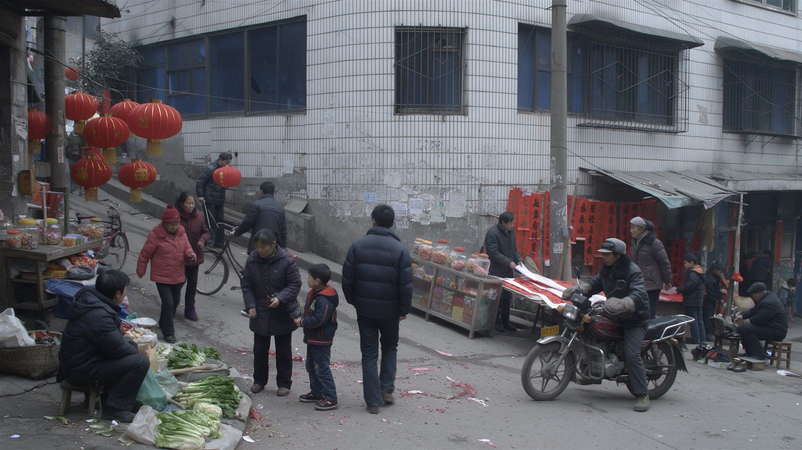
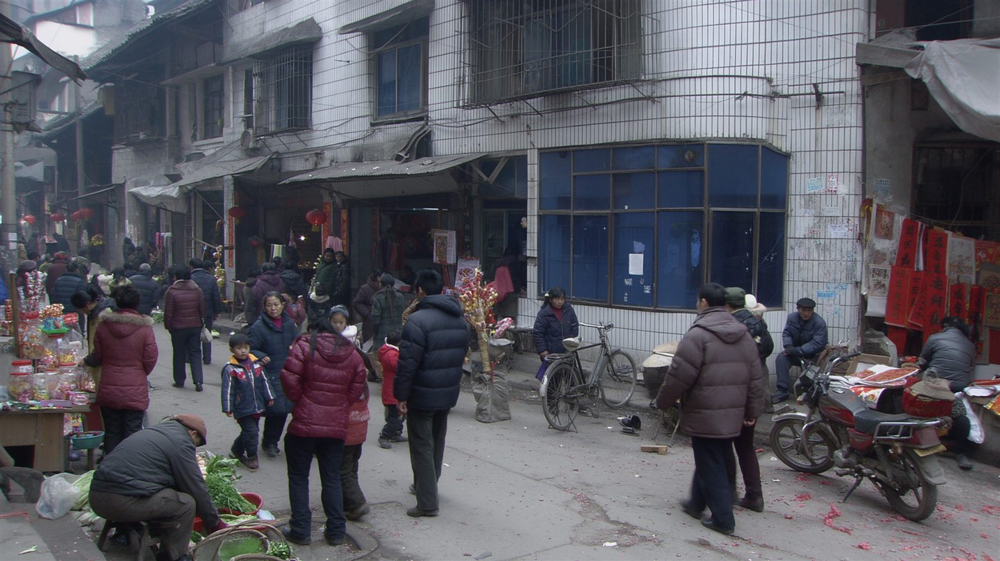
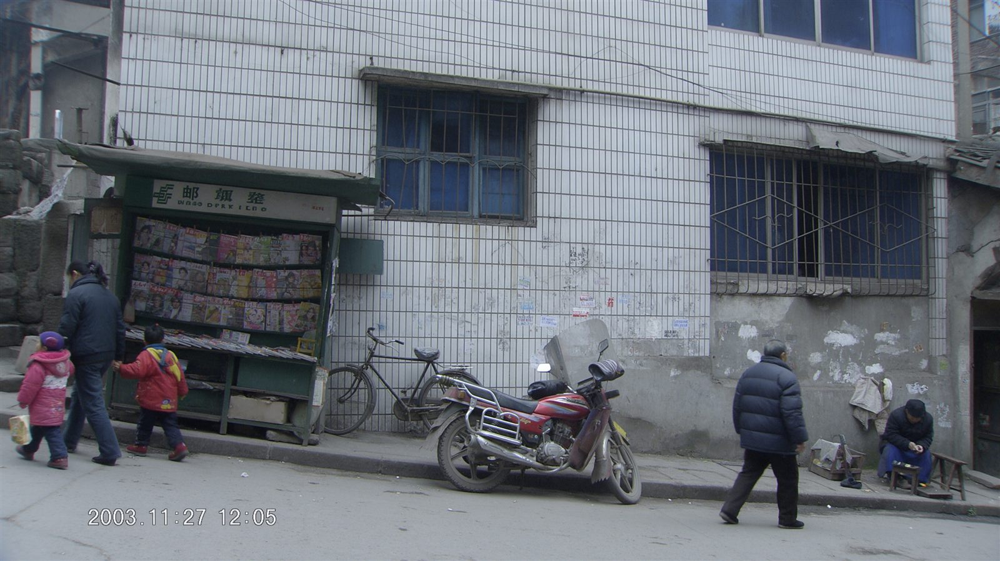
SERIES 02
千禧年风格 · 铁路记忆
绿皮车、老居民楼与穿城而过的铁轨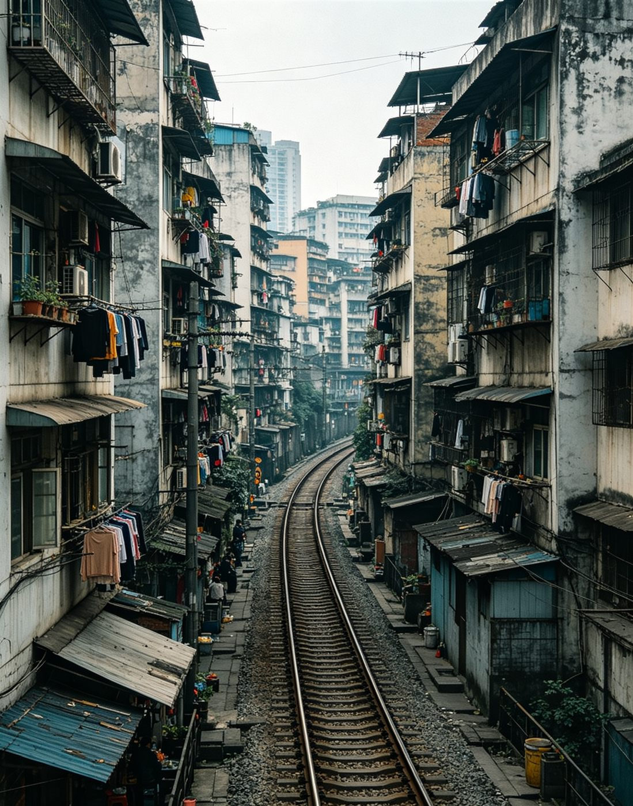
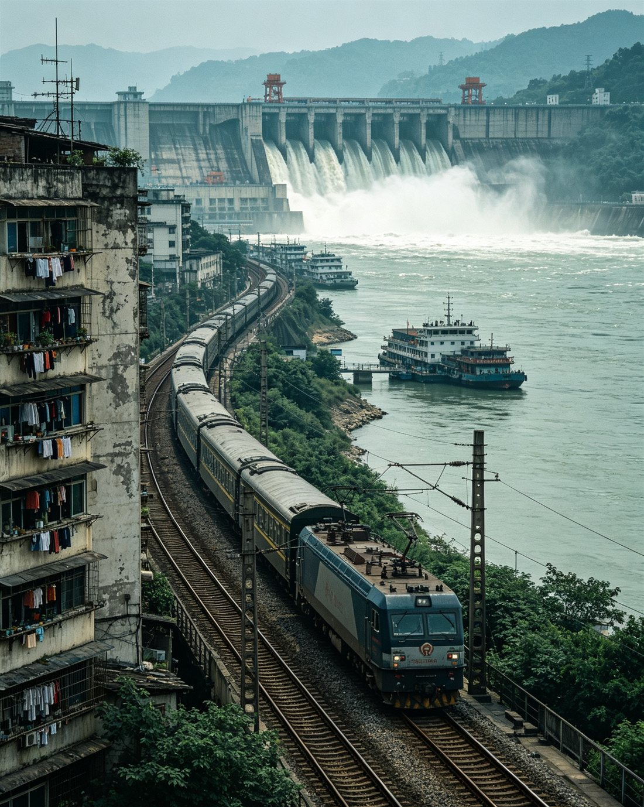
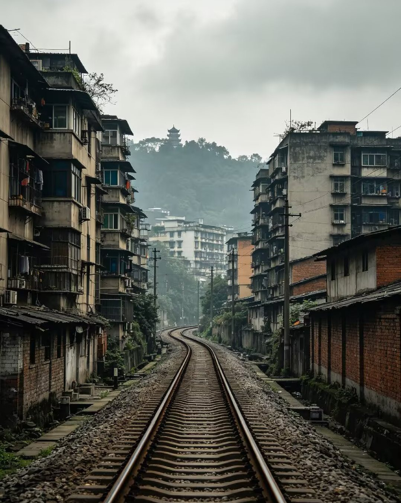
SERIES 03
千禧年风格 · 童年记忆
池塘、晒谷场、台灯与轮滑少年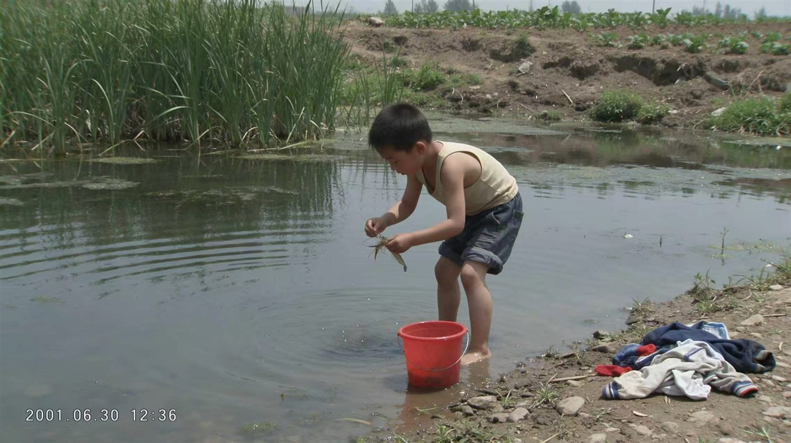
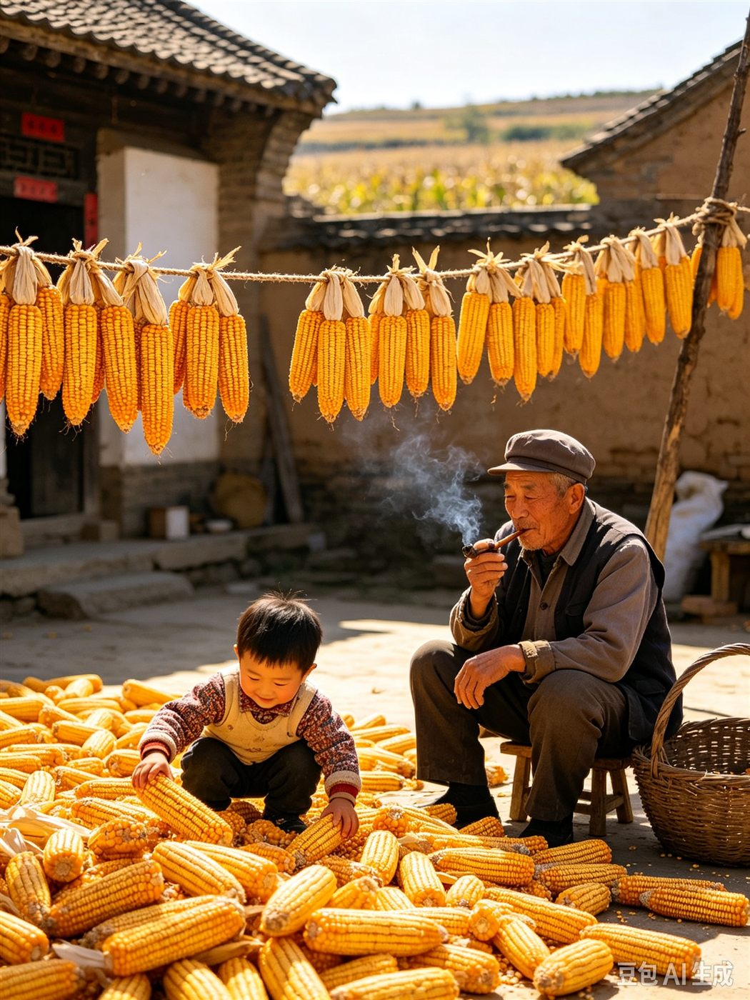
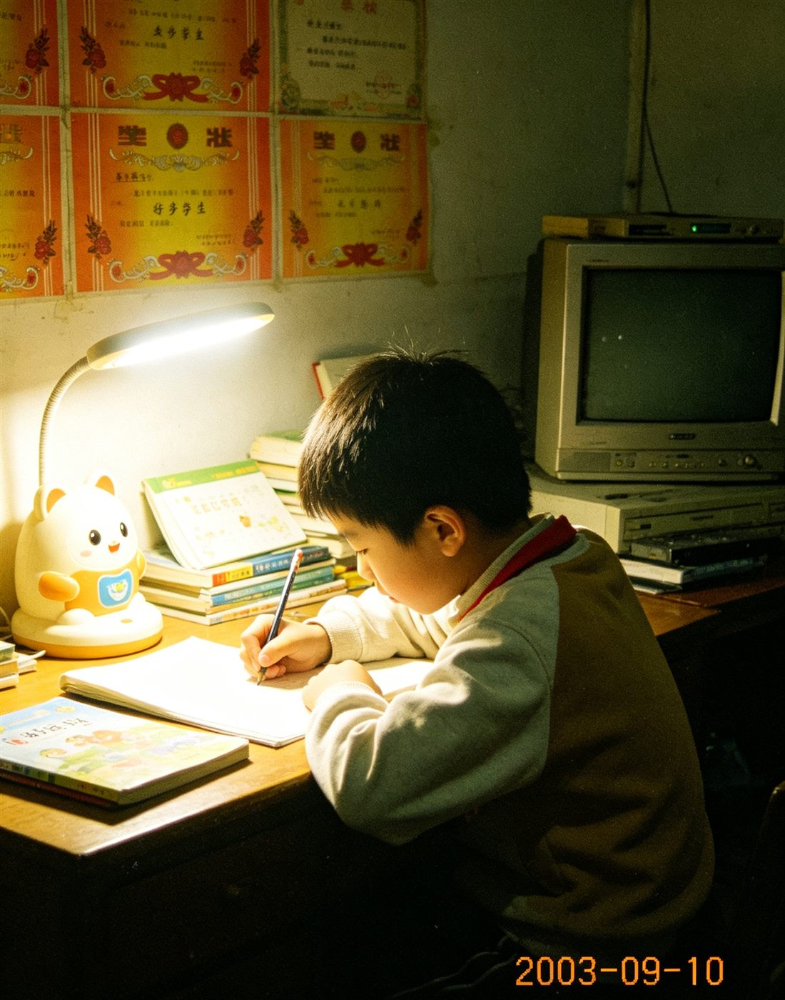
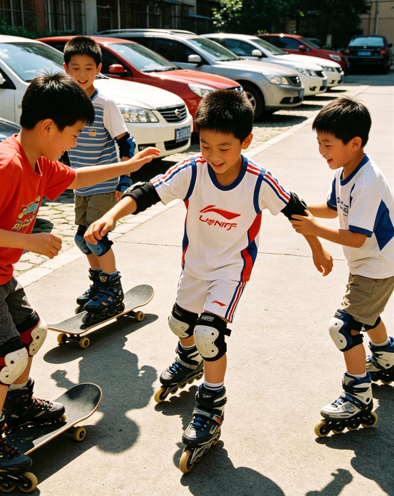
Seedream 5.0 Pro · 三个系列共 12 幅 · 新系列持续创作中